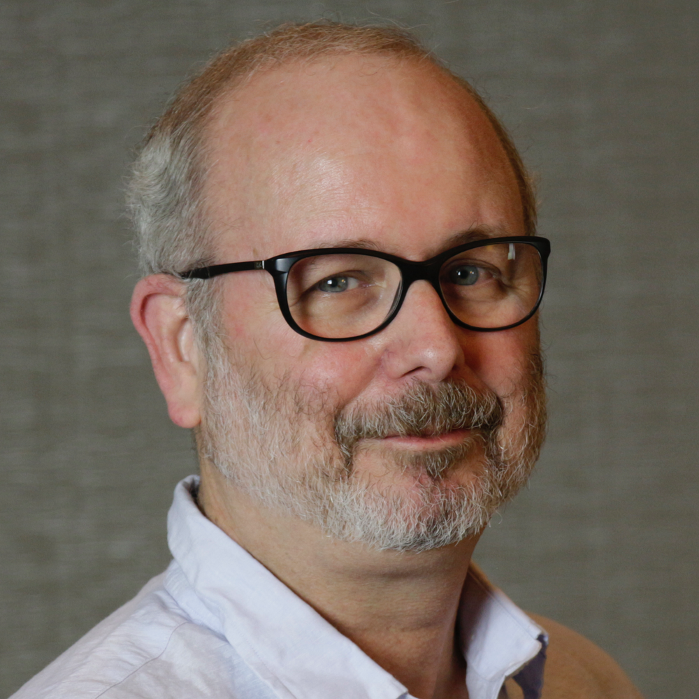
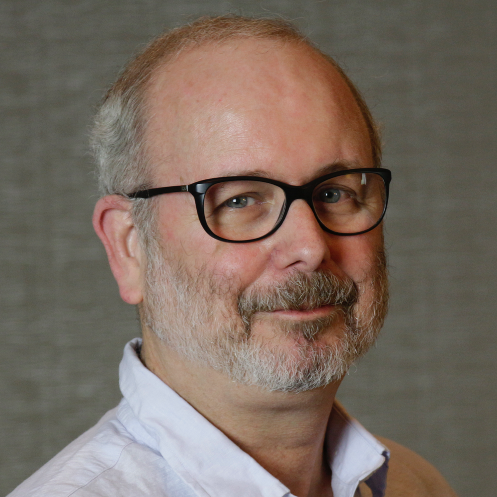

16th Annual IEEE IT Professional Conference at TCF (2022)
In-Person, Hybrid or Virtual Event (TBD)

In continuous operation since 1976, the Trenton Computer Festival (TCF) is the nation's longest running personal computer. For the sixteenth year, the TCF is extending its program to provide Information Technology and computer professionals with an additional day of conference. It is intended, in an economical way, to provide attendees with insight and information pertinent to their jobs, and to keep them informed of emerging technologies that could impact their work. The IT Professional Conference will be run between 8:30 AM and 5:00 PM on Friday, March 18, 2022 with additional sessions on Saturday, March 19. |
IEEE Information Technology Professional Conference
Friday, March 18th, 2022 at 8:30 AM to 5:00 PM
This year's event will most-likely be held virtually via on-line video conferencing
Confirmed Speakers for 2022


 



The IT Professional Conference is is co-sponsored by the IEEE (Institute of Electrical and Electronics Engineers) Computer Society Chapter of Princeton / Central Jersey.
We are planning a Women in Cybersecurity panel this year!
The Call for Speakers is Now Open
The 2022 speaker grid is starting to take shape! Please stay tuned for more details!
2021 Speaker Grid
| Tracks | ||
| Time | Applications Development | Security/Technical |
| 9:00am |
Building Robust Applicaitons with the MicroProfile APIs: A Live Coding Event By Michael Redlich |
Security Privacy Emerging Technologies By Larry Copeland, Jr. |
| 10:00am |
Self-Programming Artificial Intelligence By Kory Becker |
Privacy Law Update By Fred Wilf |
| 11:00am |
Joining an Established Agile Team By Michael Sava |
Towards Wide-Spectrum Computing By Enzo Alda & Javier Lopez |
| 12:00 noon | F A C I L I T A T E D N E T W O R K I N G S E S S I O N | |
| 1:30pm |
Building Layers of Defense for your Application using Spring Security Framework By Neha Sardana |
Bitcoin, Blockchain, Cryptocurrency better than Gold? By Donald Hsu |
| 2:30pm |
Developing for Big Data at the Intersection of Containerization and Infrastructure as Code By Howard Deiner |
Cybersecurity Issue Regarding Technology Advancements in Social Welfare By Donna Schaeffer |
| 3:30pm |
Servant Leadership in a Distributed and Disruptive World By Greg Tutunjian |
Case Study: DevSecOps Prototype to Automate Security Control Assessments By Ricky Eng |
 IT Professional Conference
IT Professional Conference
 Seminars
Networking Session
Demonstrations
Seminars
Networking Session
Demonstrations